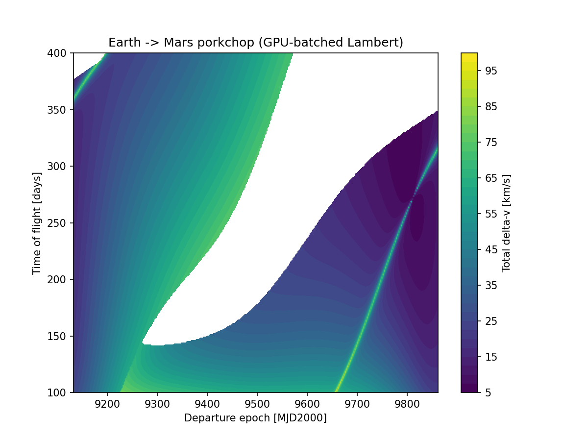

orbitopt pairs pykep + pygmo's cheap, population-based search
with tudatpy's high-fidelity numerical propagation — CUDA-batched
where it counts — to find and confirm real trajectories, from a single
Lambert transfer to a GTO → GEO orbit-raising campaign.
A screening optimizer explores a huge search space cheaply; a numerical verifier re-flies only the winner under real physics. Neither stage does the other's job.
Cheap, analytic patched-conic models — Lambert arcs, multi-gravity-assist
sequences — searched with population-based global optimizers
(pso_gen, cmaes, nsga2). Fast enough
to sweep a huge search space; blind to perturbations.
Numerical, N-body-capable propagation confirms a screened solution actually holds once Earth/Moon/Sun gravity — J2+J22 for GEO — is included. Expensive per call, so it only ever re-checks the winner.
Thousands to millions of independent candidates per run,
batched into vectorized array ops — GPU when available, numpy
otherwise, same code path either way (orbitopt.core.gpu).
Every mission — built-in or your own — is the same SceneData
JSON document, opened by the same PyVista/PySide6 renderer: Mission Control.
Live heliocentric snapshot of the Sun and eight planets — real 2K textures, true sidereal spin rates, positions from pykep ephemerides.
Lambert-seeded, GPU-screened, tudatpy-refined Earth–Moon free return. Independently re-solved, not fit to unpublished flight data.
Real Atlas V/Centaur launch-to-GTO profile, continuously propagated through an optimized minimum-burn-count apogee-raising campaign.
orbitopt validate / orbitopt run: describe a
mission in YAML, get a schema-checked, physically-verified scene file.
Speedup grows with batch size — GPU kernel-launch overhead dominates at small N, so a batched routine only pays off once the batch is large enough to amortize it. That threshold is measured per-routine.
4.7×
# 2,000,000 independent Lambert solves — 82.8s CPU (24.2k/s) → 17.7s GPU (112.8k/s), RTX A3000 Laptop 6GB

examples/04_porkchop_gpu.pyReading and viewing a scene someone already computed doesn't need pykep, pygmo, or tudatpy — the package is split so that's true in practice, not just in principle.
pip install orbitopt — stdlib + jsonschema only.
read_scene / write_scene / validate_scene
against a versioned, independent JSON Schema.
pip install orbitopt[viewer] — real PyPI wheels (numpy,
PyVista, PySide6). Opens any scene file, yours or a colleague's.
pykep + pygmo + tudatpy ship only on conda-forge/tudat-team.
environment.yml builds the layer that actually
optimizes and verifies trajectories.
# src/orbitopt/ core/ gpu.py, problem.py # numpy/cupy switch, pygmo UDP base lambert/ gpu_batch.py, cpu.py # batched + reference Izzo solvers dynamics/ nbody_gpu.py # GPU-batched coarse Earth-Moon propagator problems/ transfer_2body.py, mga.py free_return.py, geo_raising.py optimize/ gpu_bfe.py, runner.py # pygmo + custom batch fitness evaluator verify/ tudat_propagate.py differential_correction.py geo_insertion.py # tudatpy-based, high-fidelity checks viz/ scene_renderer.py # one PyVista draw path, every scene app.py # Mission Control (PySide6 + pyvistaqt) solar_system.py, mission_timeline.py, geo_raising.py mission_config.py # YAML config -> validated -> built scene missions.py # named-mission registry + plugin entry points scene_format.py # the format's entire read/write/validate surface
Kept in the README on purpose — root-caused and measured, not smoothed over.
Attach bfe before wrapping. It has to go on the raw UDA
(uda.set_bfe(bfe)) before pg.algorithm(uda).
Attaching it after silently falls back to evaluating one candidate at a
time — ~15× slower, no error raised anywhere.
J2000 ≠ ECLIPJ2000. They're related by Earth's
~23.4° obliquity and aren't interchangeable — mixing states queried in
one against the other silently produces errors of hundreds of
thousands of km.
Fine for a coast, not for a flyby. A 600s step reported an 81,733 km closest lunar approach for a trajectory whose true, converged (≤15s step) closest approach was 4,379 km.
No source edits: describe a mission's orbit elements, spacecraft, and optimizer settings, then validate and run it from the command line.
# view any scene -- no conda, real PyPI wheels only pip install orbitopt[viewer] orbitopt view solar-system # describe a mission -- no source edits cat my_mission.yaml mission: id: my-geo-mission title: My GEO raising campaign kind: geo-raising target: geostationary_longitude_deg: -101.0 campaign_search: n_burns: { min: 2, max: 6 } output: scene_file: scenes/my-geo-mission.json # schema-check, then optimize + tudatpy-verify + write orbitopt validate my_mission.yaml orbitopt run my_mission.yaml orbitopt view scenes/my-geo-mission.json
Every field falls back to the real GOES-16 numbers if omitted — the minimal config just re-derives the built-in mission. See the full config schema on GitHub.